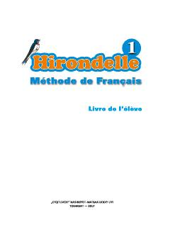

FT1-sinf o'quvchilari uchun fransuz tilini o'rgatuvchi zamonaviy darslik.
Bu darslik 1-sinf o'quvchilari uchun mo'ljallangan 'Hirondelle-1' fransuz tili darslik-majmuasining o'quvchi qismidir. Darslik o'qish, gapirish va tinglab tushunish ko'nikmalarini rivojlantirishga qaratilgan bo'lib, multimedia ilovasi va o'qituvchi uchun metodik qo'llanma bilan birga keladi. U O'zbekiston Respublikasi Davlat ta'lim standarti asosida 2013-yilda yaratilgan.